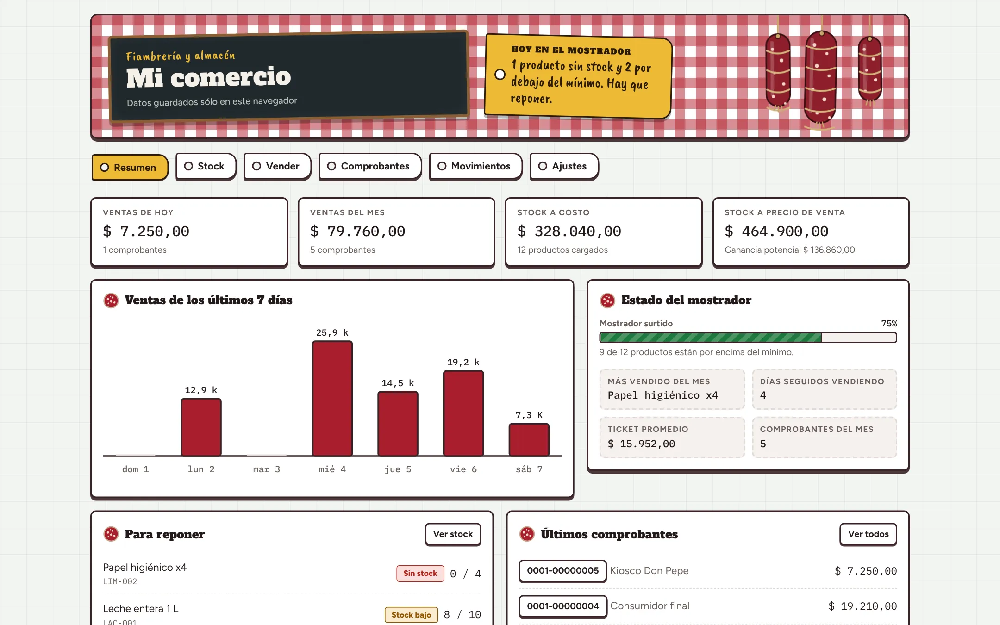
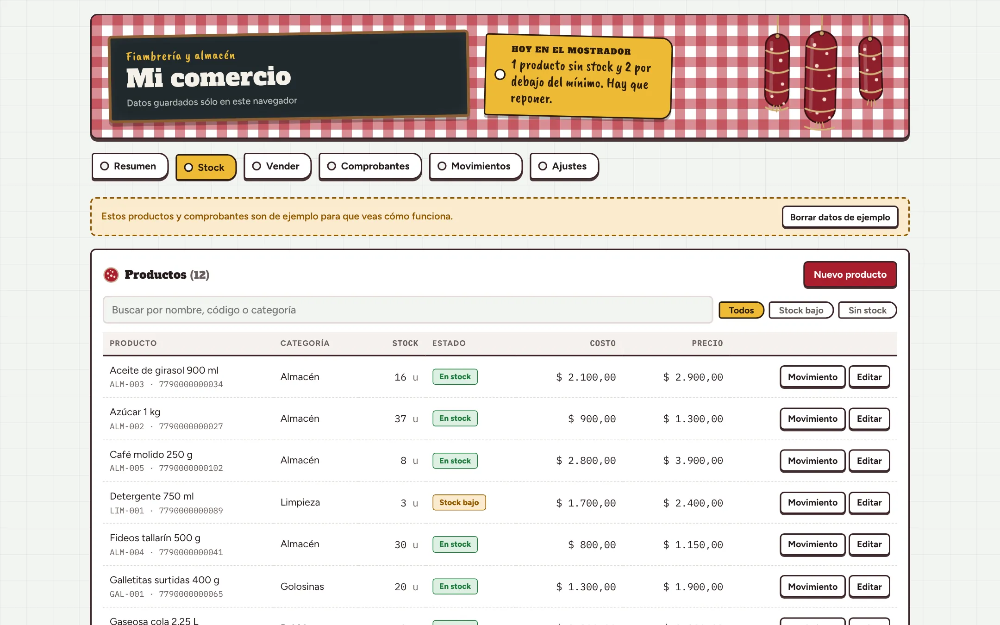
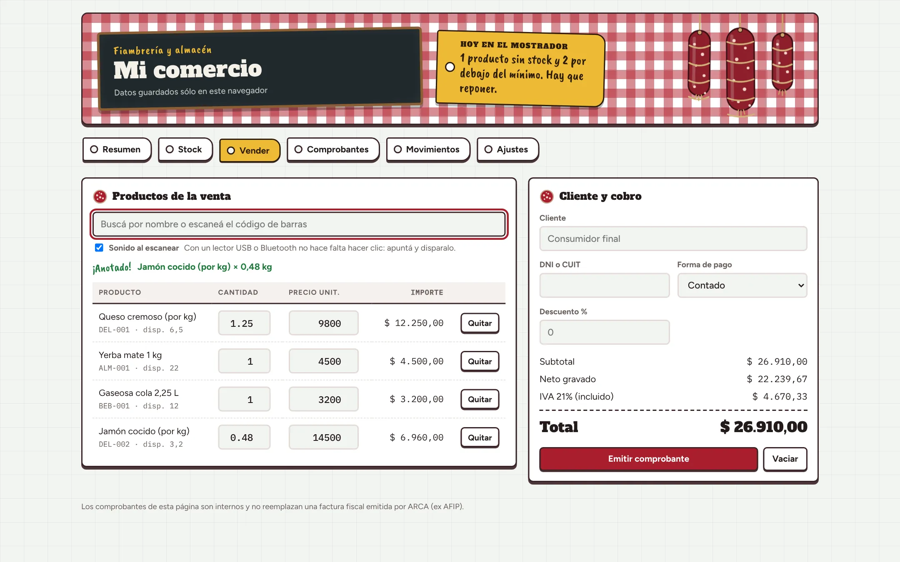
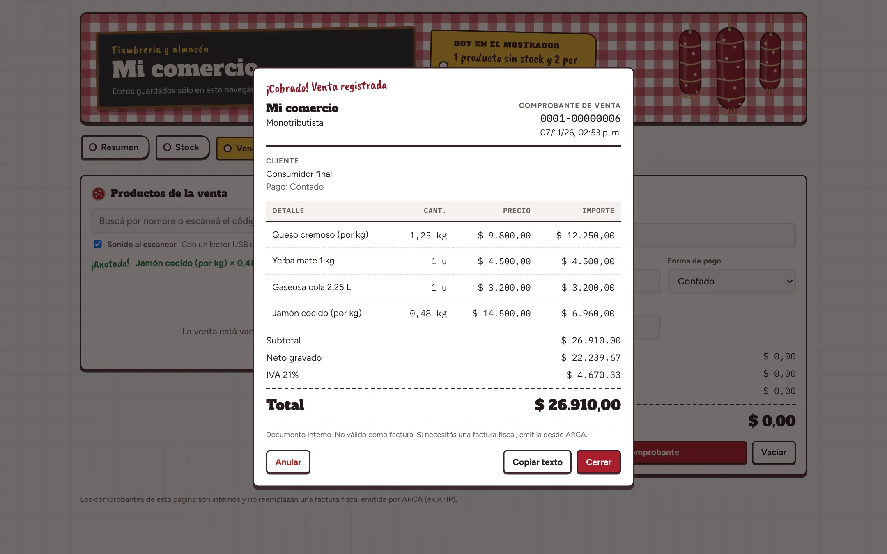

Ventas y atención
Trato con clientes, asesoramiento y cierre de ventas.
Ventas y atención al público, con ganas de crecer en tecnología. Acá muestro lo que voy armando.

Sé cómo es estar detrás de un mostrador. Por eso armo herramientas web que le resuelvan el día a un comercio.
Tengo experiencia en ventas, atención al público, caja y logística. Me atrae la programación y el diseño web: hice un curso de diseño web, conozco HTML y manejo Office.
Trato con clientes, asesoramiento y cierre de ventas.
Cobros, control de mercadería y orden del stock.
Páginas con HTML y CSS, y diseño de interfaces.
Planillas, documentos y presentaciones.
Una página para llevar el control de la mercadería y emitir comprobantes de venta, pensada para un comercio de fiambres y almacén. Estas son sus pantallas.
Los productos bajos o agotados se marcan solos, así sabés qué reponer antes de quedarte sin mercadería.

Funciona con lector de código de barras. Los fiambres por kilo se cargan leyendo la etiqueta de la balanza: la app toma el peso y calcula el importe.

Descuenta el stock, discrimina el IVA y se puede anular: la mercadería vuelve al inventario.Es un comprobante interno, no una factura fiscal.

Aviso de reposición por producto.
Cada comprobante actualiza el inventario.
Lectura de código de barras y etiquetas de balanza.
La demo trae datos de ejemplo y guarda lo que cargues solo en tu navegador.